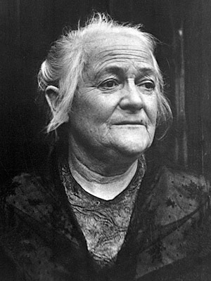
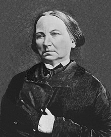
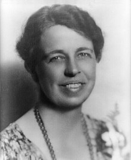
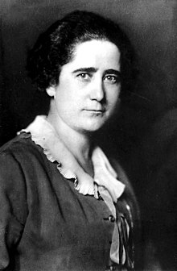

KLARA ZETKIN
Clara Zetkin, de solteira Clara Eißner,(5 de Xulio de 1857-20 de Xuño de 1933) foi unha política alemá de orixe xudío, de ideoloxía comunista, moi influente, así como unha loitadora polos dereitos da muller.
MARIE CURIE
Maria Salomea Skłodowska-Curie, maiss coñecida como Marie Curie ou Madame Curie (Varsovia, 7 de Novembro de 1867-Passy, 4 de Xulio de 1934), foi unha física e química polaca nacionalizada francesa. Pioneira no campo da radiactividade, e a primeira e única persoa en recibir dous premios Nobel en distintas especialidades científicas: Física e Química. Tamén foi a primera muller en ocupar o posto de profesora na Universidade de París e a primera en recibir sepultura con honores no Panteón de París por méritos propios en 1995.

CONCEPCIÓN ARENAL
Concepción Arenal Ponte foi unha experta en dereito, pensadora, periodista, poeta e autora dramática española ecadrada no realismo literario e pioneira no feminismo español. Ademais, foi considerada a precursora do traballo social en España.
ELEANOR ROOSEVELT
Anna Eleanor Roosevelt foi unha escritora, activista e política estadounidense. Foi a primera dama dos Estados Unidos dende o 4 de Marzo de 1933 ata o 12 de Abril de 1945, durante os cuatro períodos presidenciales do seu marido Franklin D. Roosevelt.
CLARA CAMPOAMOR
Carmen Eulalia Campoamor Rodríguez, coñecida como Clara Campoamor, foi unha avogada, escritora, política e defensora dos dereitos da muller española.
